GitHub
GitHub
 LinkedIn
LinkedIn
About
- About me: I was born in Seoul, South Korea, and then moved to the U.S. with my family at age 14, giving me a unique multicultural perspective and fluency in both Korean and English. I became a U.S. citizen early this year and recently graduated with a Bachelor of Science in Computer Science from the University of Maryland. During my senior year, I gained practical experience as a full-stack developer for over a year at Sociable AI, where I honed my technical skills until April 2024. I am now actively seeking new opportunities to further advance my career.
- Why I chose Computer Science: My passion for Computer Science emerged during my exploration of various fields of study at Montgomery College. I was captivated by the transformative role technology plays in driving progress across nearly every industry and facet of society. After earning an Associate's degree in Computer Science, I further pursued my academic journey by transferring to the University of Maryland to expand and deepen my expertise in the field.
- Career Plan: I'm currently seeking full-time opportunities to broaden my knowledge and enhance my skills as a software engineer or full-stack engineer. Meanwhile, I am currently working on the followings:
1. Earning the AWS Certified Developer - Associate certification
2. Working as a part time full-stack engineer for Commute Wake (a start-up that builds a mobile app for commuters)
3. Attending AI&S seminars focused on the applications of AI in bioengineering
4. Working on small projects with different frameworks and programming languages to maintain my knowledge and skills
- What I like to do: Outside of work, I enjoy spending time with my friends and family. Some of my favorite activities include ATV riding, kayaking, watching movies and shows, playing video games, billiards, and building with Legos.
Portfolio
Portfolio Website
This portfolio website was personally developed using mainly HTML, CSS, and JavaScript. For hosting, I chose GitHub Pages (github.io), which provides a free and reliable static server solution. The website incorporates JavaScript to enhance functionality, including implementing a dynamic and responsive navigation bar, managing contact inquiries, and adding interactive features that improve usability. This project allowed me to apply my web development skills and gain practical experience in building and deploying a fully functional portfolio site.2025
Commute Wake
I'm currently working as a part-time mobile application developer for a startup—Commute Wake.Work still in progress..
AI&S
I'm currently attending AI&S seminars to learn about the applications of AI to bioengineering (CGM—Continuous Glucose Monitoring).Work still in progress..
2024
Data Analysis and Visualization
This project was done by a group of people including myself. This project involves mainly data analysis and visualization, and it has an interesting topic which is about one of the most popular video games. Instead of playing the game, we wanted to make something useful out of the game this time. The data shows how each factor of the game affects its players, which turned out to be quite accurate and useful.The code is written in Python, and the data representation involves mathematical calculations and data visualization using the Python's libraries: numpy, pandas, seaborn, and matplotlib. The following images show the heatmap, histogram, and boxplot of the data:
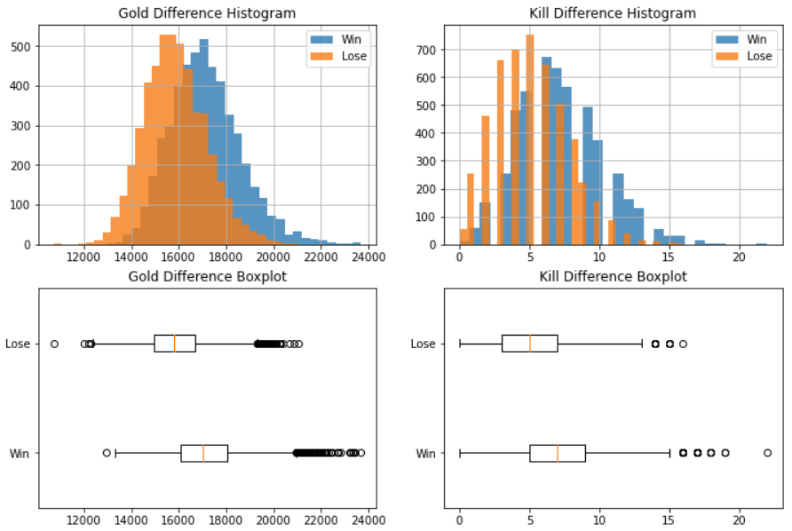
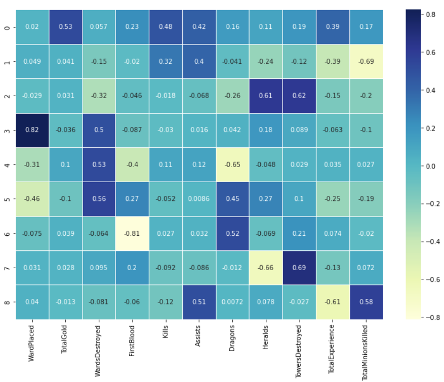
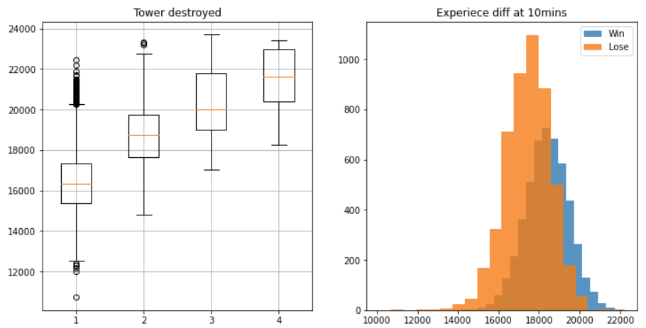
The initial index file is generated with Jupyter Notebook and we converted it into an html file. You can view the complete work on GitHub.
2023
In-Context Learning with LLM
This project involved programming software in Python to test ICL (In-Context Learning) and its goal was to get the most effective and correct outputs out of a LLM. First, I extracted useful data from the ss2 dataset to train and engineer one of the most famous LLMs, gpt-4. Then, I created multiple prompts that can be used for ICL. Using these prompts, I generated mini-batches that summarized the first generation outputs. With these mini-batches and the most outstanding prompt, I was able to achieve my goal which was to get second generation outputs that are most relevant to whichever question I ask to the LLM. The code baseline was quiet complex and difficult to understand, but by successfully finishing this project I learned a lot about ICL and how LLMs can be engineered for different purposes.
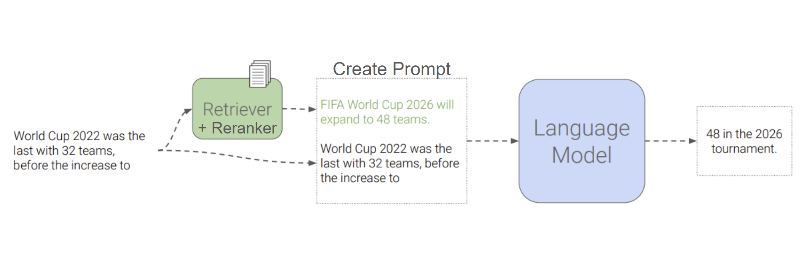
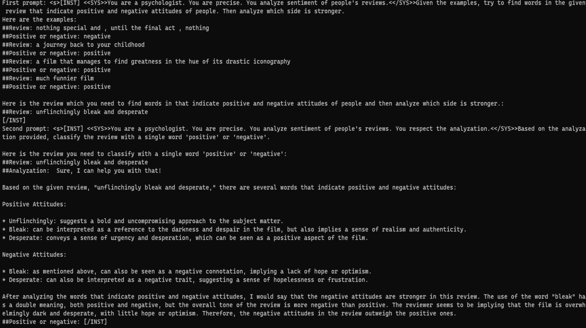
2022
Parser and Lexer
Building this program allowed me to expand my knowledge beyond computer compilers. Parser and lexer have key roles in building a compiler or other computer language tools. This program is written in OCaml, and it involved understanding how parser and lexer work before compiler. Essentially, a lexer would take inputs and convert them into a set of tokens that can be used by the parser, which would generate a syntax tree. Both parser and lexer are strongly related and required absolute coding without errors. Going through trial and error, a lot of time for the implementation of the program was spent on debugging.
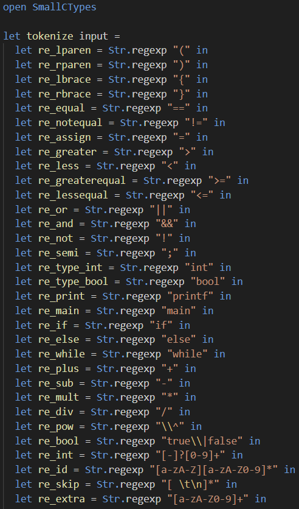
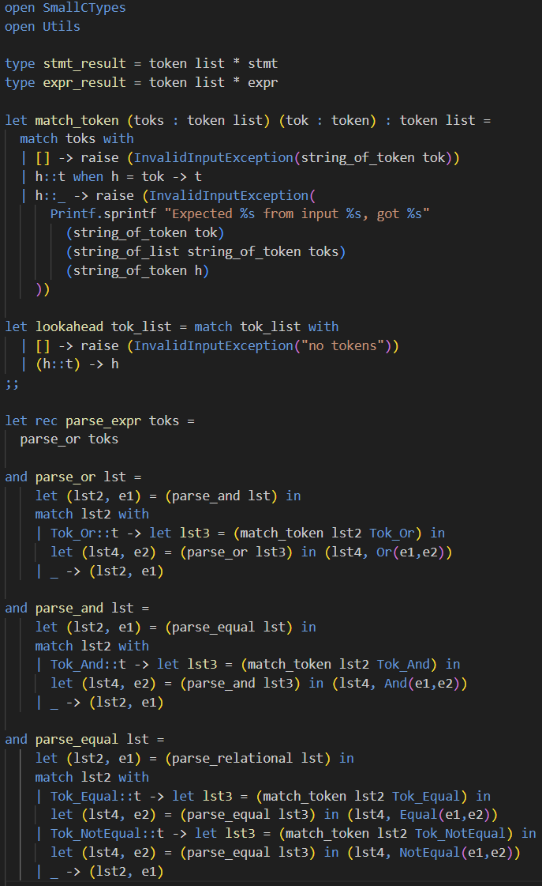
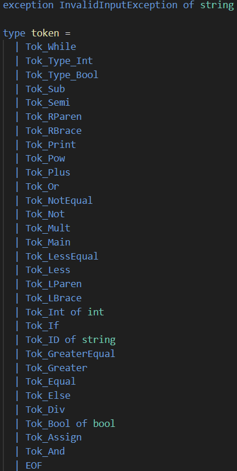
< This is just part of the complete code; the full code is not published on GitHub due to academic policy. >
Mobile App Development: Terp Pro
This is a mobile app that can connect people around the campus throughout the usage of the app. This campus-wide app involves Firebase as a database and multiple views for handling user inquries such as logins, searching, uploading, viewing reviews, etc. Because this app is database-driven, the app requires users to be connected to the internet.
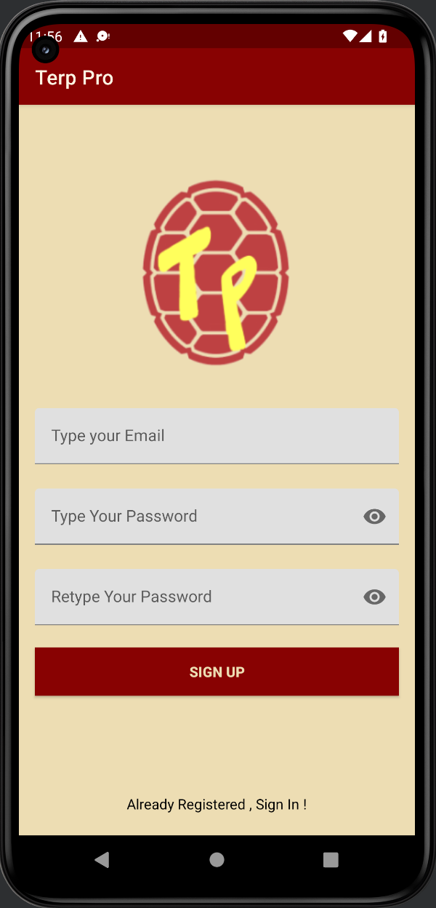
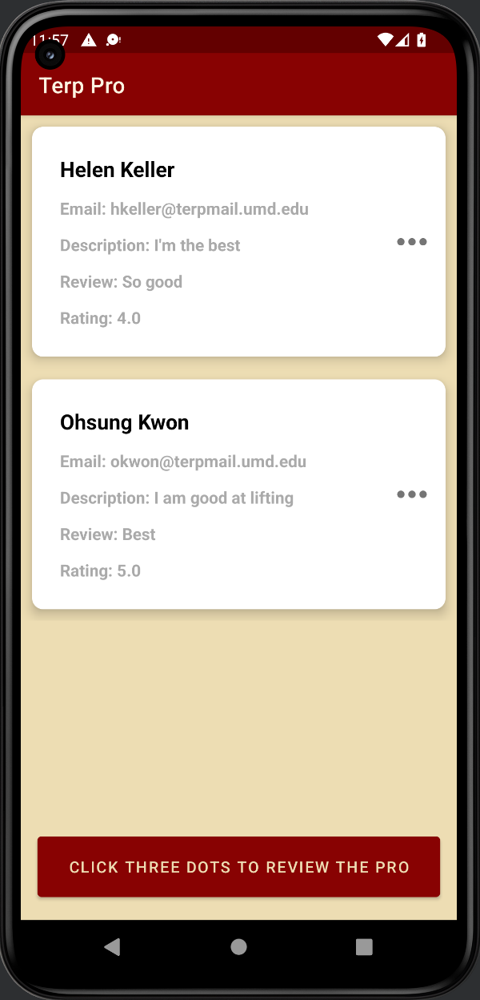
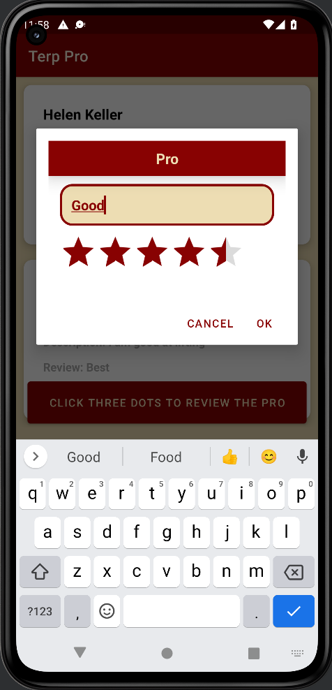
< You can view the demo video to see more in-depth about how this app works. >
2021
Town Map & Fastest Route Finder
I built a program that provides a town-wise map feature. It can display the map of a town and find the fastest route possible using the dijkstra's algorithm. The program maintains a network of towns and the roads connecting them. This was done by having two main data elements (towns and roads), one data structure (graph), and data manager. The towns are vertices consisting of custom objects that I implemented in Java. The data structure stores all the data necessary and the data manager would utilize these custom objects for the program. This was one of the easiest programs to implement, but it strengthened my knolwedge of object-oriented programming.
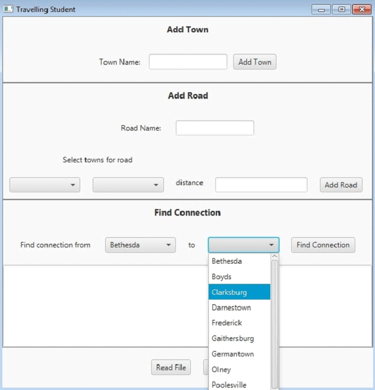
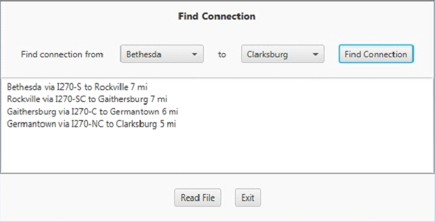
Contact
Phone: +1 301-801-1017 Click to copy Email: jiheonkim00@gmail.com Click to copy